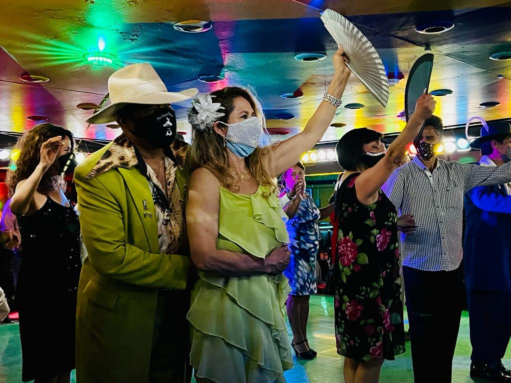
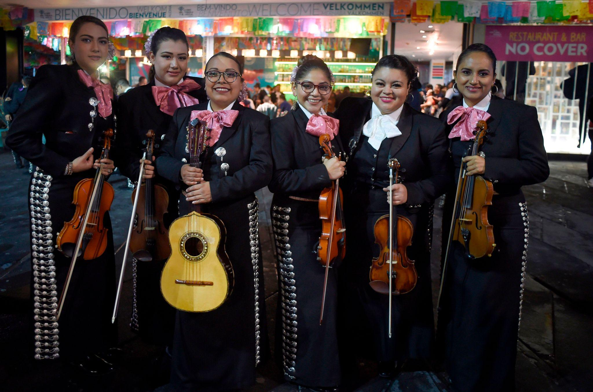
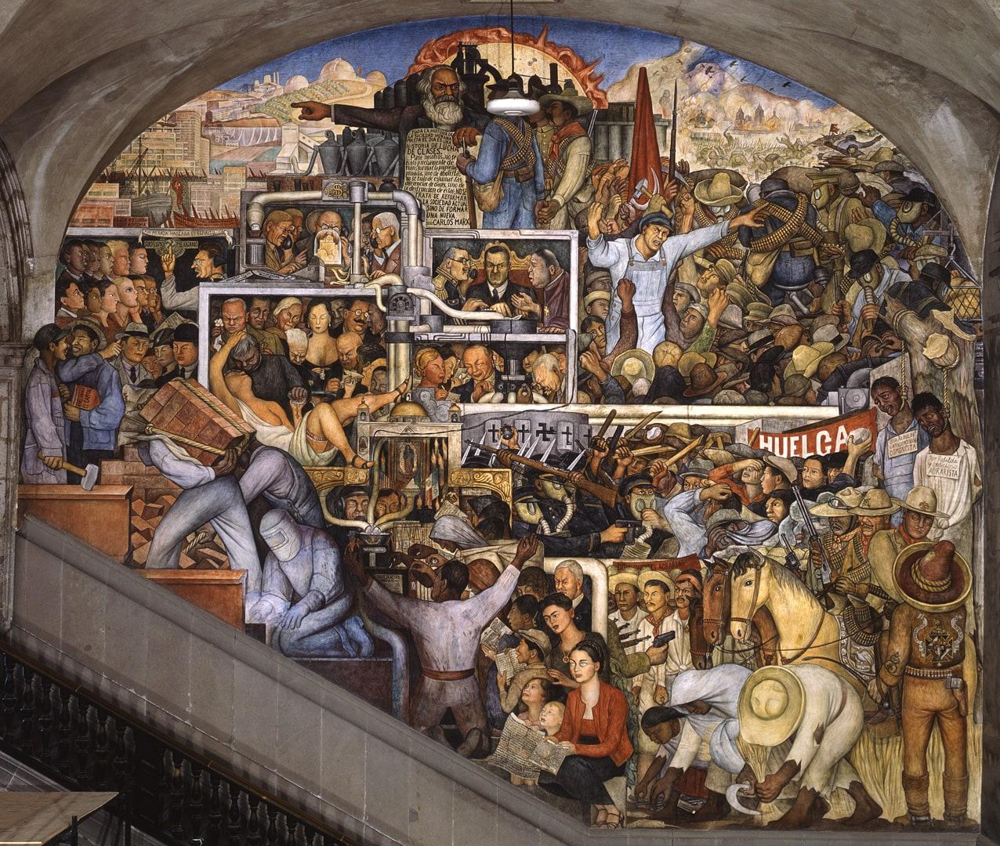
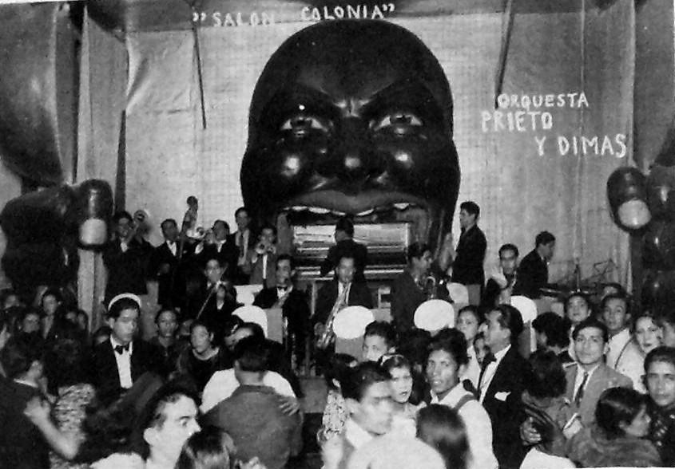
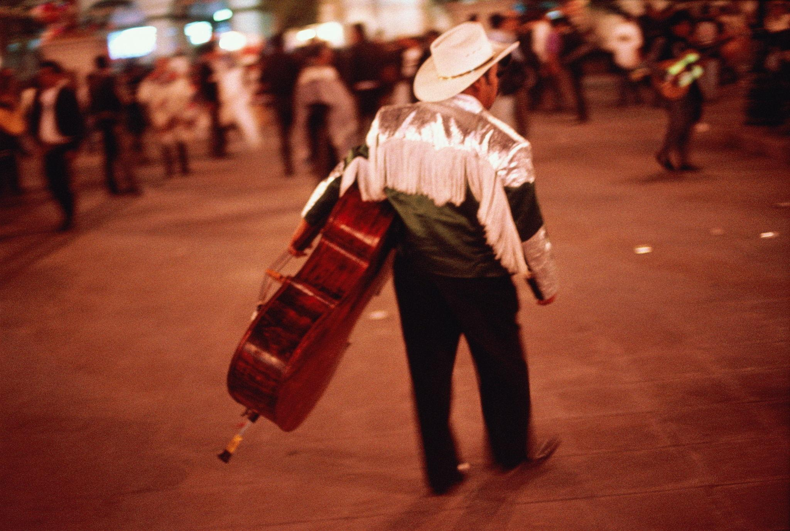
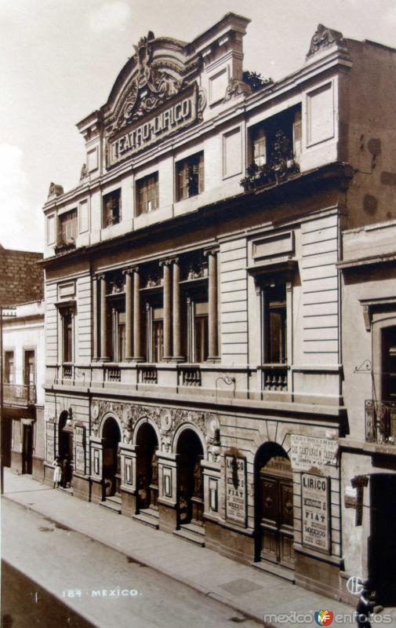
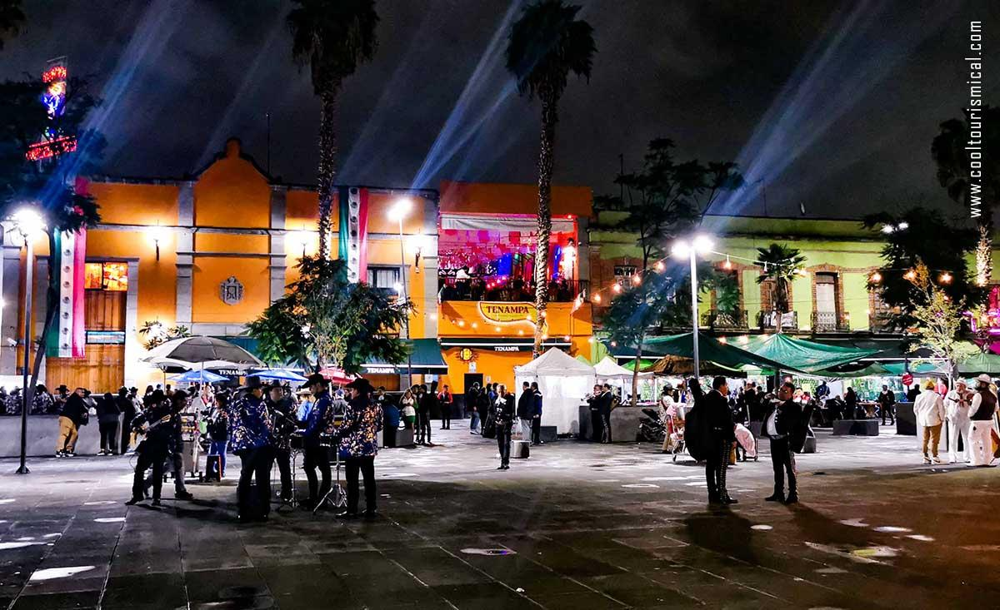

Mexico City, late 1920s — the night performed back to itself
The room isn’t trying to be foreign.
That’s the first thing you notice when you step into a theater or dance hall in Mexico City.
It’s modern—electric lights, orchestras, structured seating—but it isn’t pretending to be Paris or New York.
It’s doing something else:
deciding what Mexico looks like now
The sound
The band shifts between forms without apology:
danzón—ordered, elegant, Cuban in origin but fully adopted
local songs reshaped for stage
orchestral arrangements that feel both formal and familiar
Unlike Havana:
rhythm doesn’t trap you
Unlike Rio:
it doesn’t dissolve into flow
Instead:
it presents itself clearly
The dancing
On the floor, couples move with intention.
Danzón dominates:
precise steps
controlled turns
a clear beginning and end
There’s space between bodies—not the closeness of Buenos Aires, not the looseness of Harlem.
Everything reads.
Everything is visible.
The stage
In places like Teatro Lírico, performance becomes something else:
Not just entertainment.
Representation.
stylized “Mexican” scenes
rural imagery brought into urban space
costumes that reference tradition—but are designed for theater
You recognize what’s happening:
Culture is being selected, arranged, and shown back to the audience.
The context you feel (even if you don’t name it)
This is a city after revolution.
Mexican Revolution is recent enough that its effects are still visible.
So the question isn’t just:
how to entertain
It’s:
how to define identity
The crowd
Mixed, but not fragmented like Cairo or Shanghai.
There’s more shared understanding:
middle-class urban audiences
people who recognize the references on stage
people seeing their country reframed as something coherent
Less tension between tables.
More agreement—at least for the duration of the show.